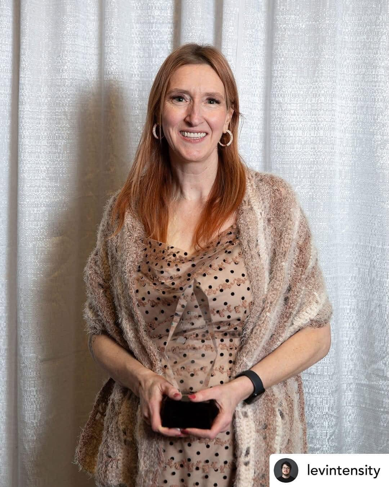

Inclusive Music Classrooms
Courses, resources, and reflections on creating music classes where every learner can participate, belong, and grow.

Neuro-affirming music education
Practical resources, mentorship, and real-world support for music teachers building inclusive beginner band programs.

Areas of Focus
Mentorship, live classes, and practical resources for new beginner band teachers — so you don’t have to do it alone.
Book TodayKeynotes, workshops, and professional learning grounded in real classroom experience.
Book a VisitPractical conversations for future music educators about inclusion, beginner band, curriculum, resilience, and real classrooms.
Explore ResourcesPractical systems, rehearsal routines, and classroom structures that support both neurodivergent teachers and learners.
Courses, resources, and reflections on creating music classes where every learner can participate, belong, and grow.
Resources, blog posts, and future learning opportunities for educators who think, plan, process, and teach differently.
Beyond the Classroom
Brainz Magazine · Executive Contributor
Writing about neurodiversity, music education, and what meaningful inclusion looks like in everyday life.
Explore My WritingPodcasts & Interviews
Explore Sarah Batchelor’s guest conversations on podcasts and other platforms, bringing a Neurospicy perspective to music education, inclusion, and everyday life.
Explore the ConversationsFeatured Resource
One connected system for interpreting, planning, teaching, and assessing Alberta’s Instrumental Music 7–9 Program of Studies.
Find Neurospicy Music Teacher
Ready-to-use music education resources for beginner band, inclusive teaching, and classroom systems.
Community & UpdatesFollow for resources, advocacy, announcements, and behind-the-scenes updates.
Behind the ScenesTeaching thoughts, launch updates, resource previews, and real classroom reflections.
Watch & LearnVideos, reflections, advocacy, and support for music educators.
Get in TouchFor speaking, collaboration, mentorship, resources, or questions.